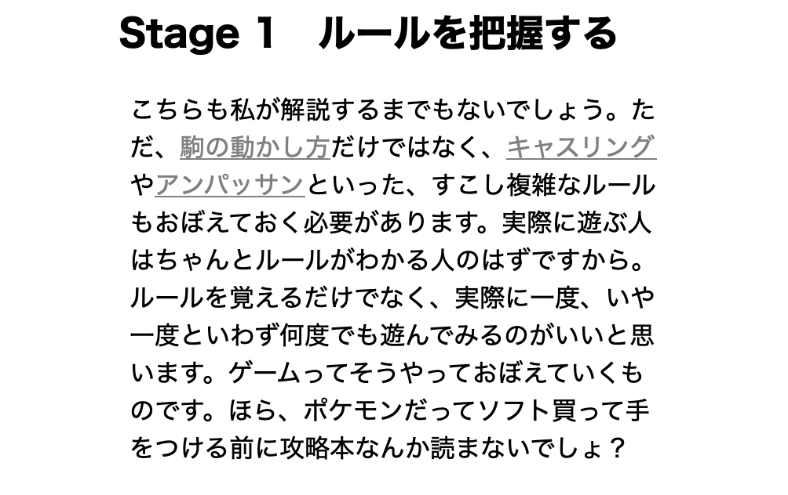

脱プログラミング入門を目指されるみなさま、ようこそ。2048 のプログラミングです。
目次
Stage 0 必要な知識を身につける
このプログラムで必要になるのは
- フロー制御
- 関数
- リスト
- クラスとオブジェクト
くらいでしょうかね。ここら辺の知識はどんなゲームを作るにしても割と必須ですので、「まったくわからねぇ」という方はぜひ勉強しに他のサイトさんへ足を運んでください。また、必要ではありませんがログをガンガン使っていきます。このサイトは
入門は終えたけど何やっていいかわからない
という方向けなので、こうした入門は他でお願いします。巷には私が説明するより遥かにわかりやすい解説がゴロゴロ転がっていますからね。
一応備忘録という形で経験者向けにメモ書きは残してあります。パソコンの方は「この言葉わかんねーな」というところにカーソルを置いてみると、色が薄くなるかもしれません。そのままクリックすると解説ページにジャンプすることができます。

スマホの方は代わりに文字が薄くなっていますので、そちらをタップしていただければ同じように解説に飛べます。
繰り返しになりますが、
初見さんのみるものではありません。
どうぞよろしくお願いします。
Stage 1 ルールを把握する
コードを書くうえでルール知らないのは流石に大問題です。他所でしっかり身に付けてください。その時に必ず 2048 をプレーしてみること。自分で実際にやってみて「こういうルールがあったのか」と気づくことがあるかもしれません。
次回予告
今回はまったくと言っていいほど解説してませんが、次回からちゃんと説明が入ります。しっかり説明しますって。いや、大丈夫ですよ。そんな心配しなくても
説明するって言ってんだろ
ということでお楽しみに。